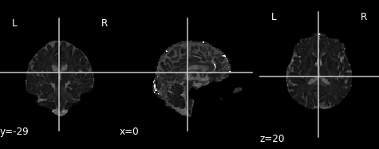
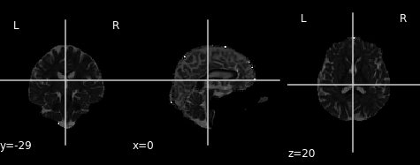

Diffusion Tensor Imaging (DTI)
Last updated on 2024-02-18 | Edit this page
Estimated time: 35 minutes
Overview
Questions
- What is diffusion tensor imaging?
- What metrics can be derived from DTI?
Objectives
- Understand the tensor model and derived metrics
- Visualizing tensors
Diffusion Tensor Imaging (DTI)
Diffusion tensor imaging or “DTI” refers to images describing diffusion with a tensor model. DTI is derived from preprocessed diffusion weighted imaging (DWI) data. First proposed by Basser and colleagues (Basser, 1994), the diffusion tensor model describes diffusion characteristics within an imaging voxel. This model has been very influential in demonstrating the utility of the diffusion MRI in characterizing the microstructure of white matter and the biophysical properties (inferred from local diffusion properties). The DTI model is still a commonly used model to investigate white matter.
The tensor models the diffusion signal mathematically as:
Where \(\boldsymbol{g}\) is a unit vector in 3D space indicating the direction of measurement and \(b\) are the parameters of the measurement, such as the strength and duration of diffusion-weighting gradient. \(S(\boldsymbol{g}, b)\) is the diffusion-weighted signal measured and \(S_{0}\) is the signal conducted in a measurement with no diffusion weighting. \(\boldsymbol{D}\) is a positive-definite quadratic form, which contains six free parameters to be fit. These six parameters are:
The diffusion matrix is a variance-covariance matrix of the diffusivity along the three spatial dimensions. Note that we can assume that the diffusivity has antipodal symmetry, so elements across the diagonal of the matrix are equal. For example: \(D_{xy} = D_{yx}\). This is why there are only 6 free parameters to estimate here.
Tensors are represented by ellipsoids characterized by calculated eigenvalues (\(\lambda_{1}, \lambda_{2}, \lambda_{3}\)) and (\(\epsilon_{1}, \epsilon_{2}, \epsilon_{3}\)) eigenvectors from the previously described matrix. The computed eigenvalues and eigenvectors are normally sorted in descending magnitude (i.e. \(\lambda_{1} \geq \lambda_{2}\)). Eigenvalues are always strictly positive in the context of dMRI and are measured in \(mm^2/s\). In the DTI model, the largest eigenvalue gives the principal direction of the diffusion tensor, and the other two eigenvectors span the orthogonal plane to the former direction.
 Adapted from Jelison et al., 2004
Adapted from Jelison et al., 2004
In the following example, we will walk through how to model a
diffusion dataset. While there are a number of diffusion models, many of
which are implemented in DIPY. However, for the purposes of
this lesson, we will focus on the tensor model described above.
Reconstruction with the dipy.reconst module
The reconst module contains implementations of the
following models:
- Tensor (Basser et al., 1994)
- Constrained Spherical Deconvolution (Tournier et al. 2007)
- Diffusion Kurtosis (Jensen et al. 2005)
- DSI (Wedeen et al. 2008)
- DSI with deconvolution (Canales-Rodriguez et al. 2010)
- Generalized Q Imaging (Yeh et al. 2010)
- MAPMRI (Özarslan et al. 2013)
- SHORE (Özarslan et al. 2008)
- CSA (Aganj et al. 2009)
- Q ball (Descoteaux et al. 2007)
- OPDT (Tristan-Vega et al. 2010)
- Sparse Fascicle Model (Rokem et al. 2015)
The different algorithms implemented in the module all share a similar conceptual structure:
-
ReconstModelobjects (e.g.TensorModel) carry the parameters that are required in order to fit a model. For example, the directions and magnitudes of the gradients that were applied in the experiment.TensorModelobjects have afitmethod, which takes in data, and returns aReconstFitobject. This is where a lot of the heavy lifting of the processing will take place. -
ReconstFitobjects carry the model that was used to generate the object. They also include the parameters that were estimated during fitting of the data. They have methods to calculate derived statistics, which can differ from model to model. All objects also have an orientation distribution function (odf), and most (but not all) contain apredictmethod, which enables the prediction of another dataset based on the current gradient table.
Reconstruction with the DTI Model
Let’s get started! First, we will need to grab the preprocessed DWI files and load them! We will also load in the anatomical image to use as a reference later on.
PYTHON
from bids.layout import BIDSLayout
from dipy.io.gradients import read_bvals_bvecs
from dipy.core.gradients import gradient_table
from nilearn import image as img
deriv_layout = BIDSLayout("../data/ds000221/derivatives", validate=False)
subj="010006"
# Grab the transformed t1 file for reference
t1 = deriv_layout.get(subject=subj, space="dwi", extension='.nii.gz', return_type='file')[0]
# Recall the preprocessed data is no longer in BIDS - we will directly grab these files
dwi = f"../data/ds000221/derivatives/uncorrected_topup_eddy/sub-{subj}/ses-01/dwi/dwi.nii.gz"
bval = f"../data/ds000221/sub-{subj}/ses-01/dwi/sub-{subj}_ses-01_dwi.bval"
bvec = f"../data/ds000221/derivatives/uncorrected_topup_eddy/sub-{subj}/ses-01/dwi/dwi.eddy_rotated_bvecs"
t1_data = img.load_img(t1)
dwi_data = img.load_img(dwi)
gt_bvals, gt_bvecs = read_bvals_bvecs(bval, bvec)
gtab = gradient_table(gt_bvals, gt_bvecs)Next, we will need to create the tensor model using our gradient
table, and then fit the model using our data! We start by creating a
mask from our data. We then apply this mask to avoid calculating the
tensors in the background of the image! This can be done using
DIPY’s mask module. Then we will fit out data!
PYTHON
import dipy.reconst.dti as dti
from dipy.segment.mask import median_otsu
dwi_data = dwi_data.get_fdata()
dwi_data, dwi_mask = median_otsu(dwi_data, vol_idx=[0], numpass=1)
dti_model = dti.TensorModel(gtab)
dti_fit = dti_model.fit(dwi_data, mask=dwi_mask)The fit method creates a TensorFit object which contains
the fitting parameters and other attributes of the model. A number of
quantitative scalar metrics can be derived from the eigenvalues! In this
tutorial, we will cover fractional anisotropy, mean diffusivity, axial
diffusivity, and radial diffusivity. Each of these scalar, rotationally
invariant metrics were calculated in the previous fitting step!
Fractional anisotropy (FA)
Fractional anisotropy (FA) characterizes the degree to which the distribution of diffusion in an imaging voxel is directional. That is, whether there is relatively unrestricted diffusion in a particular direction.
Mathematically, FA is defined as the normalized variance of the eigenvalues of the tensor:
Values of FA vary between 0 and 1 (unitless). In the cases of perfect, isotropic diffusion, \(\lambda_{1} = \lambda_{2} = \lambda_{3}\), the diffusion tensor is a sphere and FA = 0. If the first two eigenvalues are equal the tensor will be oblate or planar, whereas if the first eigenvalue is larger than the other two, it will have the mentioned ellipsoid shape: as diffusion progressively becomes more anisotropic, eigenvalues become more unequal, causing the tensor to be elongated, with FA approaching 1. Note that FA should be interpreted carefully. It may be an indication of the density of packing fibers in a voxel and the amount of myelin wrapped around those axons, but it is not always a measure of “tissue integrity”.
Let’s take a look at what the FA map looks like! An FA map is a gray-scale image, where higher intensities reflect more anisotropic diffuse regions.
We will create the FA image from the scalar data array using the anatomical reference image data as the reference image:
PYTHON
import matplotlib.pyplot as plt # To enable plotting within notebook
from nilearn import plotting as plot
fa_img = img.new_img_like(ref_niimg=t1_data, data=dti_fit.fa)
plot.plot_anat(fa_img)Derived from partial volume effects in imaging voxels due to the presence of different tissues, noise in the measurements and numerical errors, the DTI model estimation may yield negative eigenvalues. Such degenerate case is not physically meaningful. These values are usually revealed as black or 0-valued pixels in FA maps.
FA is a central value in dMRI: large FA values imply that the underlying fiber populations have a very coherent orientation, whereas lower FA values point to voxels containing multiple fiber crossings. Lowest FA values are indicative of non-white matter tissue in healthy brains (see, for example, Alexander et al.’s “Diffusion Tensor Imaging of the Brain”. Neurotherapeutics 4, 316-329 (2007), and Jeurissen et al.’s “Investigating the Prevalence of Complex Fiber Configurations in White Matter Tissue with Diffusion Magnetic Resonance Imaging”. Hum. Brain Mapp. 2012, 34(11) pp. 2747-2766).
Mean diffusivity (MD)
An often used complimentary measure to FA is mean diffusivity (MD). MD is a measure of the degree of diffusion, independent of direction. This is sometimes known as the apparent diffusion coefficient (ADC). Mathematically, MD is computed as the mean eigenvalues of the tensor and is measured in \(mm^2/s\).
Similar to the previous FA image, let’s take a look at what the MD map looks like. Again, higher intensities reflect higher mean diffusivity!
PYTHON
md_img = img.new_img_like(ref_niimg=t1_data, data=dti_fit.md)
# Arbitrarily set min and max of color bar
plot.plot_anat(md_img, cut_coords=(0, -29, 20), vmin=0, vmax=0.01)Axial and radial diffusivity (AD & RD)
The final two metrics we will discuss are axial diffusivity (AD) and radial diffusivity (RD). Two tensors with different shapes may yield the same FA values, and additional measures such as AD and RD are required to further characterize the tensor. AD describes the diffusion rate along the primary axis of diffusion, along \(\lambda_{1}\), or parallel to the axon (and hence, some works refer to it as the parallel diffusivity). On the other hand, RD reflects the average diffusivity along the other two minor axes (being named as perpendicular diffusivity in some works) (\(\lambda_{2}, \lambda_{3}\)). Both are measured in \(mm^2/s\).
Tensor visualizations
There are several ways of visualizing tensors. One way is using an
RGB map, which overlays the primary diffusion orientation on an FA map.
The colours of this map encodes the diffusion orientation. Note that
this map provides no directional information (e.g. whether the diffusion
flows from right-to-left or vice-versa). To do this with
DIPY, we can use the color_fa function. The
colours map to the following orientations:
- Red = Left / Right
- Green = Anterior / Posterior
- Blue = Superior / Inferior
Diffusion scalar map visualization
The plotting functions in Nilearn are unable to visualize these RGB maps. However, we can use the Matplotlib library to view these images.
PYTHON
from dipy.reconst.dti import color_fa
RGB_map = color_fa(dti_fit.fa, dti_fit.evecs)
from scipy import ndimage
fig, ax = plt.subplots(1,3, figsize=(10,10))
ax[0].imshow(ndimage.rotate(RGB_map[:, RGB_map.shape[1]//2, :, :], 90, reshape=False))
ax[1].imshow(ndimage.rotate(RGB_map[RGB_map.shape[0]//2, :, :, :], 90, reshape=False))
ax[2].imshow(ndimage.rotate(RGB_map[:, :, RGB_map.shape[2]//2, :], 90, reshape=False))Another way of visualizing the tensors is to display the diffusion tensor in each imaging voxel with colour encoding. Below is an example of one such tensor visualization.
Tensor visualization
Visualizing tensors can be memory intensive. Please refer to the DIPY documentation for the necessary steps to perform this type of visualization.
Some notes on DTI
DTI is only one of many models and is one of the simplest models available for modelling diffusion. While it is used for many studies, there are also some drawbacks (e.g. ability to distinguish multiple fibre orientations in an imaging voxel). Examples of this can be seen below!
Sourced from Sotiropoulos and Zalesky (2017). Building connectomes using diffusion MRI: why, how, and but. NMR in Biomedicine. 4(32). e3752. doi:10.1002/nbm.3752.
Though other models are outside the scope of this lesson, we recommend looking into some of the pros and cons of each model (listed previously) to choose one best suited for your data!
Exercise 1
Plot the axial and radial diffusivity maps of the example given. Start from fitting the preprocessed diffusion image.
PYTHON
from bids.layout import BIDSLayout
from dipy.io.gradients import read_bvals_bvecs
from dipy.core.gradients import gradient_table
import dipy.reconst.dti as dti
from dipy.segment.mask import median_otsu
from nilearn import image as img
deriv_layout = BIDSLayout("../data/ds000221/derivatives", validate=False)
subj="010006"
t1 = deriv_layout.get(subject=subj, space="dwi", extension='.nii.gz', return_type='file')[0]
dwi = f"../data/ds000221/derivatives/uncorrected_topup_eddy/sub-{subj}/ses-01/dwi/dwi.nii.gz"
bval = f"../data/ds000221/sub-{subj}/ses-01/dwi/sub-{subj}_ses-01_dwi.bval"
bvec = f"../data/ds000221/derivatives/uncorrected_topup_eddy/sub-{subj}/ses-01/dwi/dwi.eddy_rotated_bvecs"
t1_data = img.load_img(t1)
dwi_data = img.load_img(dwi)
gt_bvals, gt_bvecs = read_bvals_bvecs(bval, bvec)
gtab = gradient_table(gt_bvals, gt_bvecs)
dwi_data = dwi_data.get_fdata()
dwi_data, dwi_mask = median_otsu(dwi_data, vol_idx=[0], numpass=1)
# Fit dti model
dti_model = dti.TensorModel(gtab)
dti_fit = dti_model.fit(dwi_data, mask=dwi_mask) # This step may take a while
# Plot axial diffusivity map
ad_img = img.new_img_like(ref_niimg=t1_data, data=dti_fit.ad)
plot.plot_anat(ad_img, cut_coords=(0, -29, 20), vmin=0, vmax=0.01)
# Plot radial diffusivity map
rd_img = img.new_img_like(ref_niimg=t1_data, data=dti_fit.rd)
plot.plot_anat(rd_img, cut_coords=(0, -29, 20), vmin=0, vmax=0.01)
Axial diffusivity map.

Radial diffusivity map.
Key Points
- DTI is one of the simplest and most common models used
- Provides information to infer characteristics of axonal fibres